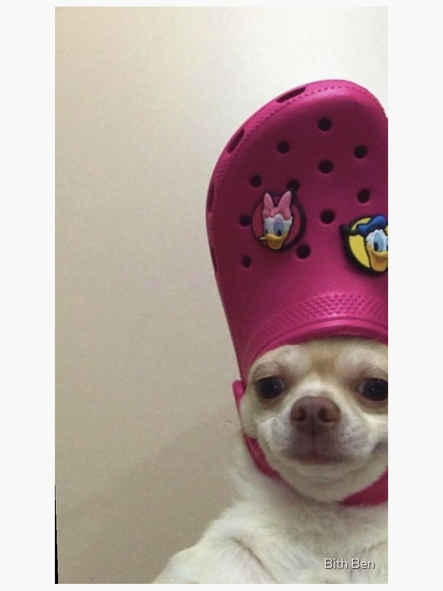

A PillPal egy felhasználóbarát gyógyszerkezelő alkalmazás, amely segít a felhasználóknak nyomon követni és pontosan betartani a gyógyszeres terápiájukat.
Az alkalmazás emlékeztető funkcióval figyelmeztet a gyógyszerek bevételére, nyilvántartja az adagolást és az időpontokat, így csökkentve a kihagyott adagok esélyét.
Ezen felül lehetőséget biztosít a gyógyszerek leltározására, az orvosi előírások kezelésére, és figyelmeztet az esetleges gyógyszer-összeférhetetlenségekre is.
A PillPal ideális választás mindazoknak, akik szeretnék egyszerűsíteni és rendszerezni a gyógyszerszedésüket, valamint növelni a terápiás fegyelem hatékonyságát.
Az alkalmazás képernyőképei
